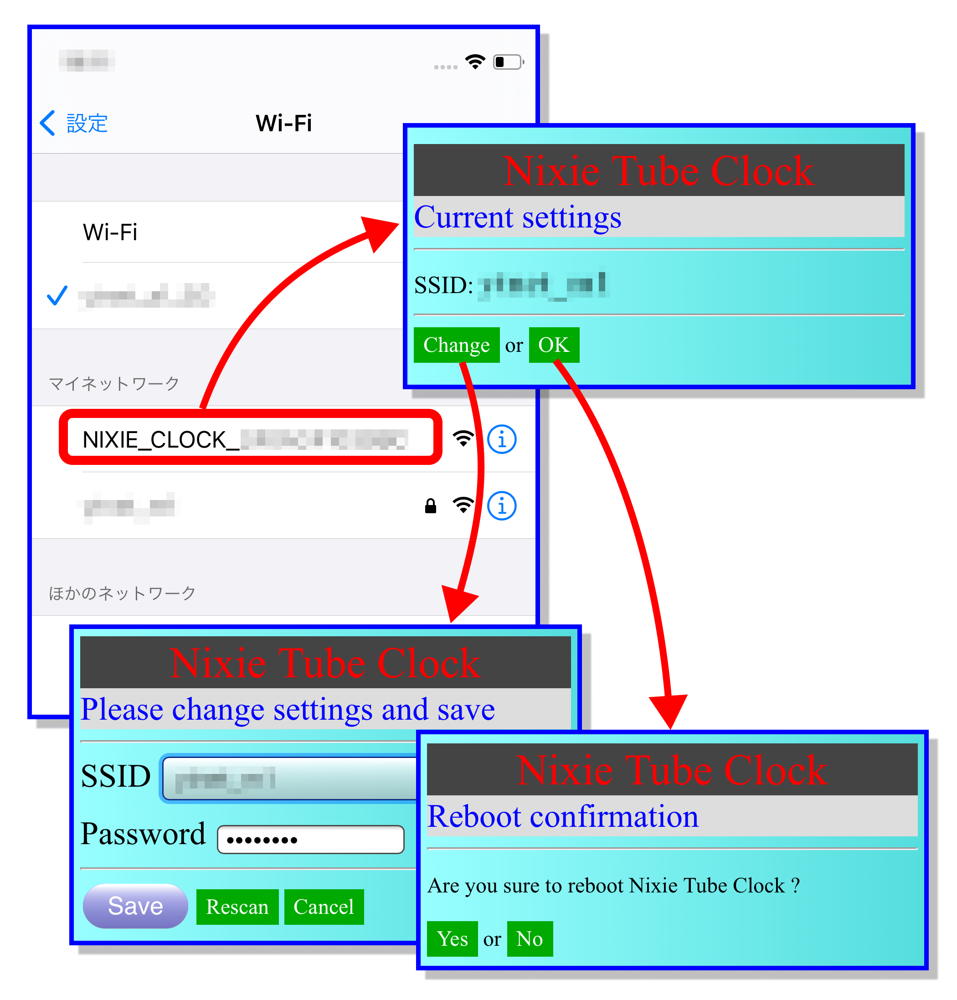

現在入手困難な、本物のニキシー管を使った時計です。
レトロな外観ではありますが、 WiFi経由でインターネット上の時刻サーバーから、 正確な時刻を取得して、 常に正確な時刻を刻みます。
WiFi経由で、自動的に時刻合わせ
インターネット上の時刻サーバー(NTPサーバー)から 正確な時刻を取得するので、時刻合わせが不要です。
WiFi設定は、スマホで行います。
(WiFi環境がない場合は、マニュアルで時刻設定することもできます。)
明るさの調節
暗い部屋で眩しいときは、明るさを調整できます。
日付表示 可能
【日付表示のとき点滅】WiFi接続 OK
インターネット経由で、自動的に時刻合わせが行われています。
[ボタン0] ダブルクリックで、WiFi設定モードにすることで、
自動的な時刻合わせを停止することもできます
(インターネット通信を停止します)。
【日付表示のとき点灯】WiFi接続 なし (WiFi設定モード)
スマホを使って、本時計の WiFiを設定するか、 マニュアル操作で時刻を設定してください。
設定した時刻は、電源を切っても保存されます。
WiFi設定ができているのに、電波の状態などで接続が切れた場合は、 [ボタン0] ダブルクリックすると、時計が再起動し、WiFi接続を試みます。
時計表示のとき ``` +---------- [ボタン0] ダブルクリック: WiFi設定、長押し: 手動時刻合わせ | +------- [ボタン1] 日付表示 | | +---- [ボタン2] 明るさ変更、ダブルクリック:バクライトON/OFF | | | --v--v--v-- | o o o |
```
手動で時刻を合わせるとき ``` +---------- [ボタン0] 長押し: 時刻合わせキャンセル | +------- [ボタン1] 年 -> 月 -> 日 -> 時 -> 分 -> [確定] | | +---- [ボタン2] カウントアップ | | | --v--v--v-- | o o o |
```
[ボタン1]を押すと、「年:月:日」を表示します。
数秒後に、時刻表示に戻ります。
明るさを変更(サイクリック)
WiFi経由でインターネットに接続すれば、 NTP(Network Time Protocol)を使って、 インターネットから正確な時刻を取得して、 自動的に時刻合わせを行います。
設定したWiFiアクセスポイントの情報は、電源を切っても保存されるので、 毎回設定する必要はありません。
[ボタン0] を ダブルクリックしてください。
アクセスポイント・モードになり、コロンが点灯します。
スマホのWiFi設定で、「NIXIECLOCKXXXXXXXX」に接続してください。
接続すると、ブラウザが自動起動されます。
SSIDを設定し、保存してください。
[OK]で、時計が再起動再起動します。
スマホのWiFi設定を元に戻してください。

RTC(Real Time Clock)が、バッテリーでバックアップされているので、 電源を入れ直しても、時刻合わせをし直す必要はありません。
[ボタン0] を 長押しして、時刻設定モードに移行
年:月:日 の表示になり、年(下二桁)が点滅します。
以下
年 -> 月 -> 日 -> 時 -> [確定]
の順番で設定します。 (秒は、常に「00」)
[ボタン2] で 点滅している数値がカウントアップ
[ボタン1] で 数値が確定
次に進みます。
「分」を確定すると、 時刻が設定され、 時計表示に戻ります。
設定を中断したい場合は、 [ボタン0] を長押ししてください。
(元の時刻に戻ります)
(WiFi経由でインターネットに接続している場合は、 この手順で時刻を変更しても、 定期的にインターネットから時刻を取得して補正されます。)
[ファイル]-[環境設定]-[追加のボードマネージャのURL]
https://raw.githubusercontent.com/espressif/arduino-esp32/gh-pages/package_esp32_index.json
| | | |--|--| | ボード | ESP32 Dev Module | | Upload Speed | 921600 | | CPU Frequency | 240Mhz(WiFi/BT) | | Flash Frequency | 80MHz | | Flash Size | 4MB(32Mb) | | Partition Scheme | Default 4MB with spiffs(1.2MB APP/1.5MB SPIFFS) |
github: EspExceptionDecoder(スタックトレース表示) [注意] Microsoft Store の Arduino IDE はNG